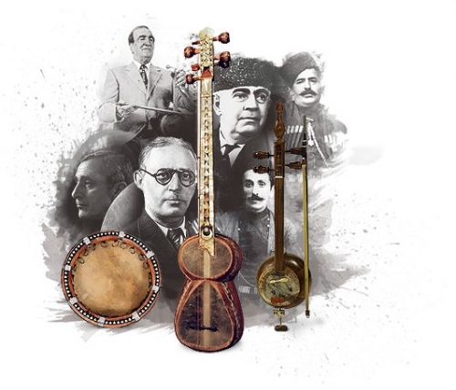
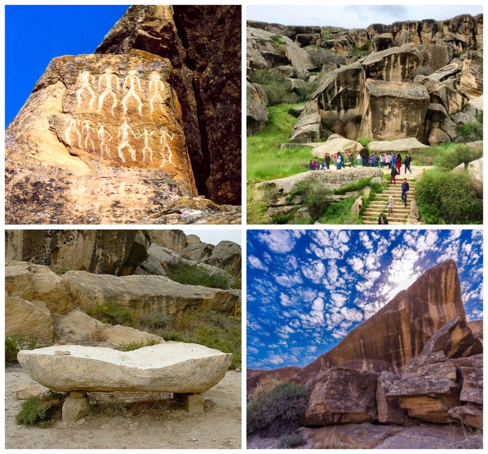

Spor Mirasımız

Karabağ Futbol Kulübü
1951 yılında Ağdam'da kurulan kulüp, halkımızın azminin ve sarsılmaz ruhunun en büyük simgesidir. Avrupa arenalarında "Atlılar" lakabıyla fırtınalar estirmeye devam etmektedir.
Kültür ve Mimari Mirasımız

Kız Kalesi
Bakü'nün en eski ve gizemli yapısı olan bu kule, UNESCO Dünya Mirası listesindedir.

Halı Sanatı
Karabağ ve Tebriz halıları, ilmik ilmik işlenen bir tarihin ve estetiğin aynasıdır.

Azerbaycan Muğamı
Halkımızın ruhunu yansıtan, UNESCO koruması altındaki kadim müzik mirasımız.

Şirvanşahlar Sarayı
Yakın Doğu'nun en ihtişamlı saray külliyelerinden biri, İçerişehir'in mücevheri.

Gobustan Kayalıkları
Binlerce yıl öncesine ait kaya resimleriyle insanlık tarihinin açık hava müzesi.